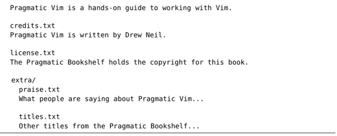
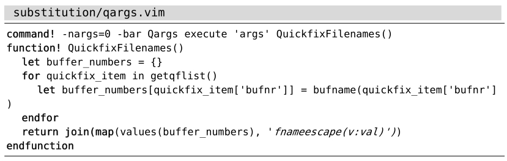

）。注意，最后3条命令可以连起来使用，就像这样：
）。注意，最后3条命令可以连起来使用，就像这样：技巧96在多个文件中执行查找与替换
substitute命令通常只针对当前文件进行操作，而如果想在整个工程范围内实现相同的替换操作，该怎么办呢？尽管此类场景很常见，但是Vim确实没有提供这样的专用命令，用于工程范围内的查找与替换操作。通过对Vim中一些简单命令的组合，我们可以间接地实现该功能。
我们先从一种看似粗浅却很实用的方案开始讨论，再看看如何改进它。我们将使用refactor-project文件夹作为示范。你可以在随书附带的源代码文件中找到它们，具体包含如下文件及内容：

仔细观察将会发现，这些文件都包含单词“Pragmatic”，要么在词组“Pragmatic Bookshelf”中出现，要么在词组“Pragmatic Vim”中出现。接下来，我们将利用一次查找与替换操作，将每一处“Pragmatic Vim”都改为“Practical Vim”，而每一处“Pragmatic Bookshelf”则保持不变。
如果你想跟着做的话，请先登录Pragmatic Bookshelf网站的Practical Vim页面，下载源代码，再在运行 Vim 之前，切换到refactor-project所在的路径。
substitute命令
先来设计substitute命令吧。我们要撰写的模式，只需匹配词组“Pragmatic Vim”中的单词“Pragmatic”，却要忽略词组“Pragmatic Bookshelf”中同样的单词。用以下模式可以实现：
➾ /Pragmatic\ze Vim
此处引入元字符\ze的目的是排除匹配中的单词“Vim”（参见技巧77）。之后，我们便可以运行substitute命令了：
➾:%s//Practical/g
接下来，我们要想办法在整个工程范围内执行这条命令。
在当前工程的所有文件中执行substitute命令
在技巧37中，我们已经学过:argdo命令，它允许我们在一组文件中运行Ex命令。因此，我们可以采用这项技术在所有工程文件中运行substitute命令。但是首先一点，我们必须通过以下命令，把所有工程文件加到参数列表中：
➾:args **/*.txt
在继续操作之前，还有一件事情需要处理，即运行这条命令：
➾:set hidden
启用该设置后，我们就可以在不保存文件改动的前提下，跳转至其他文件了。有关更具体的讨论，请参考技巧37。
现在，我们终于可以通过以下命令，在所有文件中执行替换命令了：
➾:argdo %s//Practical/g
《 E486: Pattern not found: Pragmatic\ze Vim
尽管这条命令可以完成任务，但是Vim会在提示栏中报告一处错误“找不到模式”。请牢记，在我们要处理的文件中，有一些只包含了词组“Pragmatic Bookshelf”，但并没有包含“Pragmatic Vim”。因此，当Vim在这些文件中执行substitute命令时，会抛出一处错误。
尽管错误消息会造成干扰，但是Vim还是会在所有余下的文件中继续执行substitute命令。虽然问题不大，但毕竟使人分心啊，尤其是在处理大批文件的时候。如果我们在substitute命令中加入标志位e，就可以屏蔽这些错误消息。因此，可以用以下命令来代替原来的命令：
➾:argdo %s//Practical/ge
通过这种方式，可以大大减少对我们的干扰。
让我们稍事休息，回顾一下之前的所作所为。首先，我们运行:args **/*.txt把当前工程中的所有文件加载到参数列表。然后，当我们运行:argdo %s//Practical/ge时，Vim会对所有这些文件执行substitute命令。尽管本例只加载了几个缓冲区，但在现实情况中，列表中所列的文件可能会是成百上千。虽然采用此项技术可以保证完成任务，但毕竟要运行多次没必要的substitute命令。说白了，这其实是一种散射（scatter-shot）法(3)。
接下来，让我们看看是否可以“点射”目标。
创建一个只包含目标模式的文件列表
如果我们把这个难题一分为二，怎么样？首先，在工程范围内查找我们的目标模式，然后，再对存在匹配的文件执行substitute命令。
为了在工程范围内执行查找操作，我们将用到:vimgrep命令（参见第18章）。由于此命令用的也是Vim内置的搜索引擎，因此，我们可以重用之前的模式。先试着运行以下命令：
➾ /Pragmatic\ze Vim
➾:vimgrep /<C-r>// **/*.txt
输入<C-r>/会把上次的查找模式重新插进来。此外，通配符**/*.txt将指示vimgrep在当前文件夹中的所有文件内部进行查找。
每个由vimgrep返回的匹配都将在quickfix列表中被记录下来（参见第17章）。通过运行:copen，我们可以开启quickfix窗口，浏览这些结果。但是，我们不想逐行查看这些结果，只想让substitute命令在quickfix列表所列的所有文件中得以执行。
若是Vim支持类似:quickfixdo这样的命令就好了，但是天不遂人愿。因此，我们将用一小段Vim脚本作为替代方案：

你可以将这段代码放入你的vimrc文件，也可以当作插件安装。(4)
此时，如果我们运行:Qargs的话，会把所有位于quickfix列表中的文件统统加载至参数列表。而当我们再在参数列表的所有文件中运行substitute命令的话，可以肯定它只包含满足匹配的文件。这样一来，标志位e可以弃用了，因为再也不会发生substitute命令提示错误的情况了。
以下是完整的命令序列：
➾ /Pragmatic\ze Vim
➾:vimgrep /<C-r>// **/*.txt
➾:Qargs
➾:argdo %s//Practical/g
➾:argdo update
其中，:update命令用于保存文件，但只有在文件发生改动时，才会被执行（参见:h update）。注意，最后3条命令可以连起来使用，就像这样：
➾:Qargs | argdo %s//Practical/g | update
其中，字符 | 在Vim的命令行中具有特殊含义，这一点与shell用户的预期有所不同。在Unix中，管道符通常负责将一条命令的标准输出传递至下一条命令的标准输入（创建“管道”）。而在Vim的命令行中，|仅仅表示命令的分隔。这与Unix shell中分号符的用法一致。更多的细节，请查阅:h :bar 。
我们之前采用的散射法，其特点是在工程内的所有文件中执行substitute命令，而不论是否包含目标模式。新的策略是在此基础上加以改良。尽管我们仍然要在工程的每个文件中进行查找，但命令却换成了vimgrep。此后，通过自定义命令 :Qargs，我们可以把位于quickfix列表中的所有文件都复制到参数列表中。这样一来，我们就可以集中于那些匹配我们模式的文件，有的放矢地运行substitute命令了。
应用此法会额外衍生出一项好处，即参数列表中的所有文件都曾被substitute命令修改过。如果我们要检查之前的改动，首先要运行:first，之后便可以用:next逐个地浏览这些文件了。
(1) n代表从1到9的数字。——译者注
(2) https://github.com/tpope/vim-abolish
(3)作者将这种方式比作用散弹枪射击，子弹虽然多，但是命中率并不可控。——译者注
(4) https://github.com/nelstrom/vim-qargs